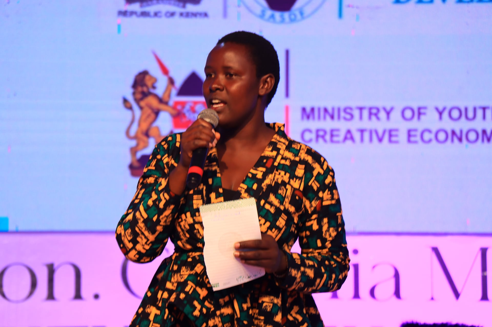
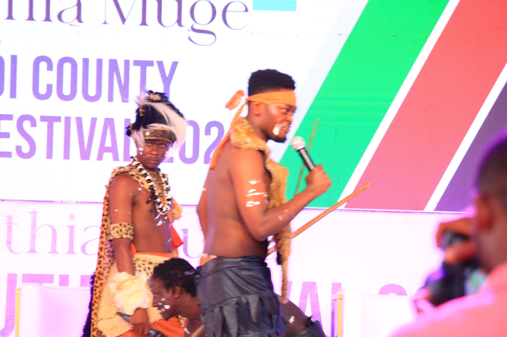
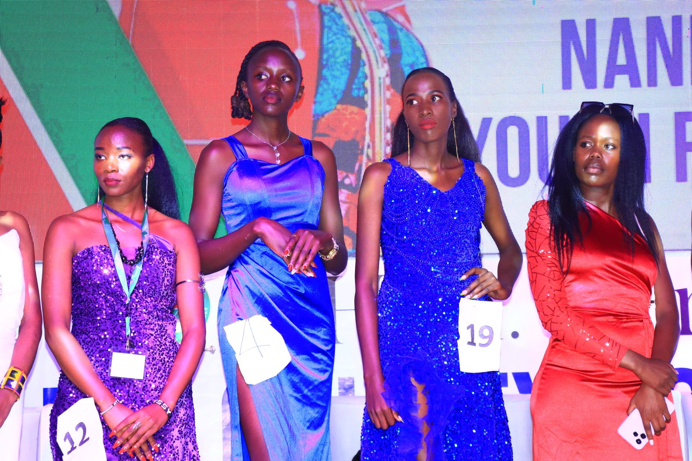

The Nandi Youth Festival is a two-day celebration of youth pitches, performances and exhibits. It is an opportunity for young people in Nandi County to sharpen their skills, showcase their talent and ideas, learn from mentors and connect with others building bolder futures.



Highlights from the 2025 festival.
Pitch or perform in one sub-category and be scored by judges. Ages 18–35, National ID required.
Apply to compete →Display a product, innovation or work in a curated, non-judged showcase. Limited spaces.
Apply to exhibit →Watch live, network and meet mentors. Free and open to all; registration is optional.
Register →Applications close 2 November 2026, 11:59 PM. Open to Nandi County residents. Exhibitors cannot also compete.
The top three in each sub-category are awarded. 2025 winners cannot defend their titles.
“To the young people of Nandi County: your ideas, your talent and your enterprise are the greatest resource our county has. This festival is your stage. Bring your friends and family — attendance is free and open to all.”Hon. Cynthia MugeWoman Representative, Nandi County · Festival Patron